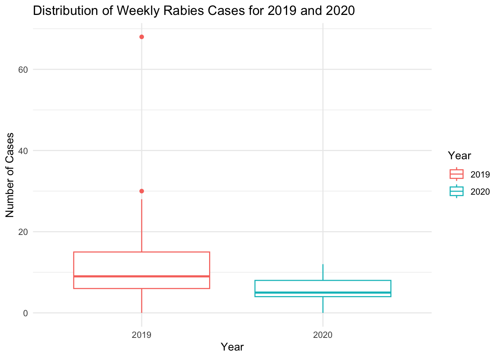
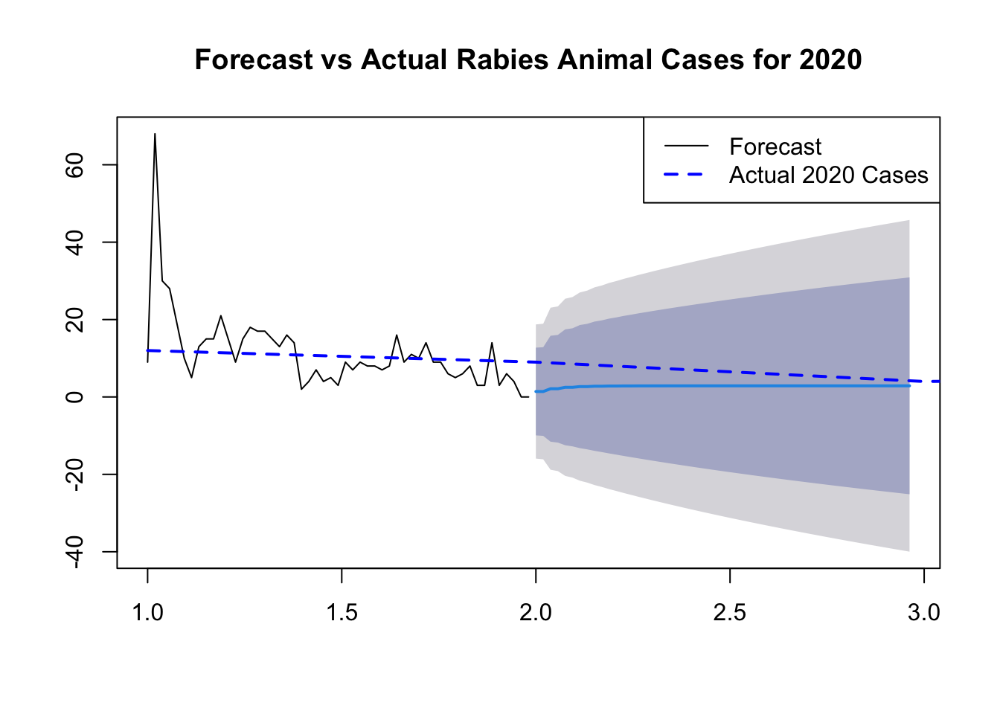
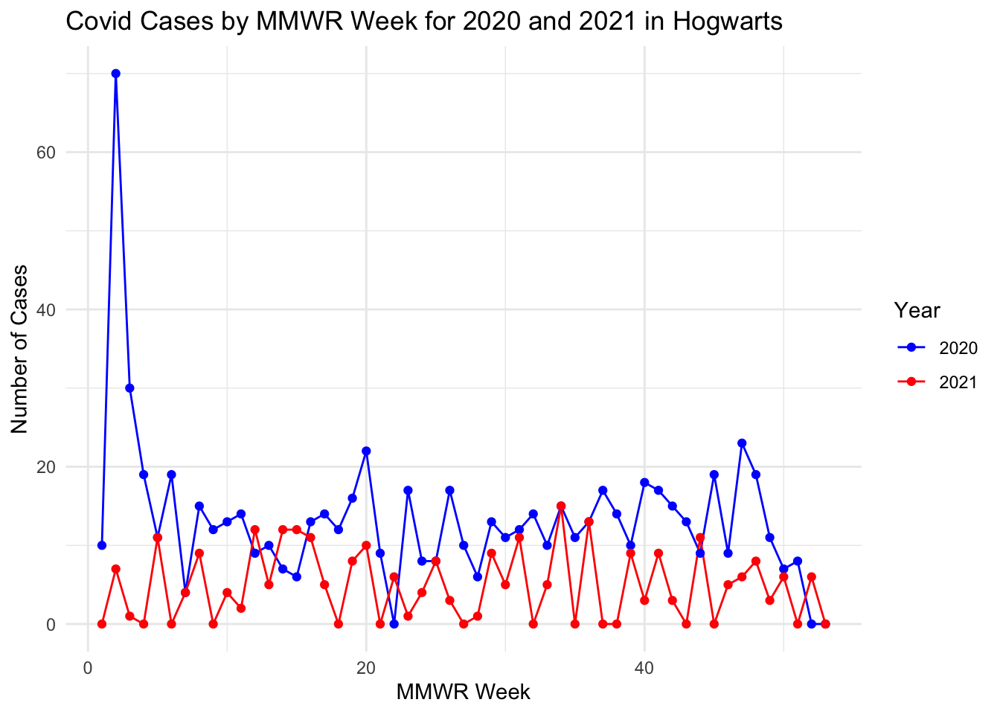

here() starts at /Users/andrewruiz/andrew_ruiz-MADA-portfolio
library(readr)library(dplyr)
Attaching package: 'dplyr'
The following objects are masked from 'package:stats':
filter, lag
The following objects are masked from 'package:base':
intersect, setdiff, setequal, union
library(tidyr)library(ggplot2)library(forecast)
Registered S3 method overwritten by 'quantmod':
method from
as.zoo.data.frame zoo
library(Hmisc)
Attaching package: 'Hmisc'
The following objects are masked from 'package:dplyr':
src, summarize
The following objects are masked from 'package:base':
format.pval, units
# Read the CSV file using here()rabies2020 <-read_csv(here("cdcdata-exercise", "Rabies2020.csv"))
Rows: 3710 Columns: 23
── Column specification ────────────────────────────────────────────────────────
Delimiter: ","
chr (11): Reporting Area, Rabies, Animal, Current week, flag, Rabies, Animal...
dbl (8): MMWR Year, MMWR Week, Rabies, Animal, Current week, Rabies, Animal...
lgl (4): Rabies, Human, Current week, Rabies, Human, Previous 52 weeks Max†...
ℹ Use `spec()` to retrieve the full column specification for this data.
ℹ Specify the column types or set `show_col_types = FALSE` to quiet this message.
# Now apply your renaming and cleaningnames(rabies2020) <-gsub("[^[:alnum:] ]", "", names(rabies2020))names(rabies2020) <-gsub(" ", "_", names(rabies2020))rabies2020_cleaned <- rabies2020# Check the column namesprint(names(rabies2020_cleaned))
This dataset was obtained from the data.cdc.gov site link to data. It contains the count of animal and human rabies cases in the US and territories for 2020 and 2019 by MMWR Week. Since there were no human rabies cases in 2020 or 2019, this will focus on animal cases only.
Unlike human cases, which rarely go undiagnosed, animal cases are more prone to surveillance bias. Comparing the counts from 2020 to 2019, may be an important indicator of the effects of limited public health lab testing in the first year of the pandemic when public health staff were diverted to support COVID operations and some labs were closed.
Let’s look at the first few rows
head(rabies2020)
# A tibble: 6 × 23
Reporting_Area MMWR_Year MMWR_Week Rabies_Animal_Current_week
<chr> <dbl> <dbl> <dbl>
1 MASSACHUSETTS 2020 1 NA
2 US RESIDENTS 2020 1 16
3 WASHINGTON 2020 1 NA
4 HAWAII 2020 1 NA
5 WISCONSIN 2020 1 NA
6 MARYLAND 2020 1 NA
# ℹ 19 more variables: Rabies_Animal_Current_week_flag <chr>,
# Rabies_Animal_Previous_52_weeks_Max <dbl>,
# Rabies_Animal_Previous_52_weeks_Max_flag <chr>,
# Rabies_Animal_Cum_2020 <dbl>, Rabies_Animal_Cum_2020_flag <chr>,
# Rabies_Animal_Cum_2019 <dbl>, Rabies_Animal_Cum_2019_flag <chr>,
# Rabies_Human_Current_week <lgl>, Rabies_Human_Current_week_flag <chr>,
# Rabies_Human_Previous_52_weeks_Max <dbl>, …
# the column names have special characters that I will remove#names(rabies2020) <- gsub("[^[:alnum:] ]", "", names(rabies2020))#names(rabies2020) <- gsub(" ", "_", names(rabies2020))#print(names(rabies2020))
#now select the variables we will needrabies2020_selected <- rabies2020_cleaned %>%select( Reporting_Area, MMWR_Week, Rabies_Animal_Current_week, Rabies_Animal_Cum_2019, Location_1, Location_2 ) %>%# Some of the count data has missing values.# these can be replaced with zeros# Replace NA values with 0mutate(Rabies_Animal_Current_week =replace_na(Rabies_Animal_Current_week, 0),Rabies_Animal_Cum_2019 =replace_na(Rabies_Animal_Cum_2019, 0) )print(names(rabies2020_selected))
Now that the data is cleaner, let’s focus on the South Atlantic region for the rest of the analysis.
The original dataset does not provide the incident case count by MMWR week for 2019. Instead it only has the cumulative cases by week. We will have to create a calculate field for this so that we can make some comparisons between the years.
# Focus on South Atlantic state for the rest of the analysissouth_atlantic_data <- rabies2020_selected %>%filter(Location_2 =="SOUTH ATLANTIC") %>%# Calculate incident cases for 2019arrange(Reporting_Area, MMWR_Week) %>%group_by(Reporting_Area) %>%mutate(Incident_Cases_2019 = Rabies_Animal_Cum_2019 -lag(Rabies_Animal_Cum_2019, default =0)) %>%ungroup()str(south_atlantic_data)
Let’s create a line graph with the counts by MMWR week for both 2020 and 2019.
# Prepare data for graphing: Pivot to long format for both 2019 and 2020south_atlantic_long <- south_atlantic_data %>%# Ensure MMWR_Week and Reporting_Area are retained for grouping in the long formatpivot_longer(cols =c(Incident_Cases_2019, Rabies_Animal_Current_week), names_to ="Year", values_to ="Cases") %>%# Correct the Year column to reflect actual yearsmutate(Year =recode(Year, Incident_Cases_2019 ="2019", Rabies_Animal_Current_week ="2020"))head(south_atlantic_long)
# A tibble: 6 × 7
Reporting_Area MMWR_Week Rabies_Animal_Cum_2019 Location_1 Location_2 Year
<chr> <dbl> <dbl> <chr> <chr> <chr>
1 SOUTH ATLANTIC 1 9 <NA> SOUTH ATLANT… 2019
2 SOUTH ATLANTIC 1 9 <NA> SOUTH ATLANT… 2020
3 SOUTH ATLANTIC 2 77 <NA> SOUTH ATLANT… 2019
4 SOUTH ATLANTIC 2 77 <NA> SOUTH ATLANT… 2020
5 SOUTH ATLANTIC 3 107 <NA> SOUTH ATLANT… 2019
6 SOUTH ATLANTIC 3 107 <NA> SOUTH ATLANT… 2020
# ℹ 1 more variable: Cases <dbl>
# Graph the incident animal cases from 2019 and 2020 by MMWR weekggplot(south_atlantic_long, aes(x = MMWR_Week, y = Cases, color = Year, group = Year)) +geom_line() +geom_point() +theme_minimal() +labs(title ="Rabies Cases by MMWR Week for 2019 and 2020 in South Atlantic",x ="MMWR Week",y ="Number of Cases",color ="Year") +scale_color_manual(values =c("2019"="blue", "2020"="red"))
# Lets compare the two years with a box plotggplot(south_atlantic_long, aes(x = Year, y = Cases, color = Year)) +geom_boxplot() +theme_minimal() +labs(title ="Distribution of Weekly Rabies Cases for 2019 and 2020",x ="Year",y ="Number of Cases")

This analysis aims to understand the trends in animal rabies cases reported in the South Atlantic region during 2019, assess the model’s fit, and forecast future cases into the next year. We employ time series analysis techniques, focusing on ARIMA modeling, to capture the underlying patterns in the weekly reported cases and predict future occurrences. The process encompasses data preparation, visualization, model selection and diagnostics, and forecasting, culminating in a comparison of forecasted cases against actual data from 2020.
# Prepare the time series datatime_series_data <- south_atlantic_data %>%select(MMWR_Week, Incident_Cases_2019) %>%mutate(MMWR_Week =as.Date(paste0("2020-", MMWR_Week, "-1"), format ="%Y-%U-%u"))
Warning: There was 1 warning in `mutate()`.
ℹ In argument: `MMWR_Week = as.Date(paste0("2020-", MMWR_Week, "-1"), format =
"%Y-%U-%u")`.
Caused by warning in `strptime()`:
! (0-based) yday 369 in year 2020 is invalid
# Convert to time series objectts_data <-ts(time_series_data$Incident_Cases_2019, frequency =53)# Time Series Visualizationplot(ts_data, main ="Time Series of Rabies Animal Cases by MMWR Week for 2019")
Ljung-Box test
data: Residuals from ARIMA(2,1,1)
Q* = 16.92, df = 8, p-value = 0.03096
Model df: 3. Total lags used: 11
# The Ljung-Box test examined the residuals from an ARIMA(2,1,1) model #to see if they are correlated with each other. The test statistic (Q*) #was 16.92 with 8 degrees of freedom, resulting in a p-value of 0.03096. #This suggests that there is evidence of autocorrelation in the residuals, #indicating that the ARIMA model may not fully capture the underlying patterns #in the data.# Forecastingforecast_values <-forecast(arima_model, h =52)# Plot Forecast#plot(forecast_values, main = "Forecast of Rabies Animal Cases for the Next 52 Weeks")# Plot Forecast and Actual 2020 Cases# Assuming you have the actual 2020 cases data stored in a variable called actual_2020_cases# Plot Forecast and Actual 2020 Casesplot(forecast_values, main ="Forecast vs Actual Rabies Animal Cases for 2020")lines(south_atlantic_data$Rabies_Animal_Current_week, col ="blue", lty =2, lwd =2) # Add actual 2020 cases to the plot# Add legendlegend("topright", legend =c("Forecast", "Actual 2020 Cases"), col =c("black", "blue"), lty =c(1, 2), lwd =c(1, 2))

The Ljung-Box test examined the residuals from an ARIMA(2,1,1) model to see if they are correlated with each other. The test statistic (Q*) was 16.92 with 8 degrees of freedom, resulting in a p-value of 0.03096. This suggests that there is evidence of autocorrelation in the residuals, indicating that the ARIMA model may not fully capture the underlying patterns in the data.
Part 2
Contributed by Xueyan Hu
First creating a synthetic dataset
I asked AI tool google Gemini to create the codes for generating a synthetic dataset that will look like the cleaned dataset done by Andrew, but I used different names and random 2 continuous year for this synthetic dataset. It contains reporting area, the number of wwmr week in a physical year, cumulative incident of a disease (here for mine is covid) in the first year, incident cases in first year and incident cases in second year. The result was rough and wasn’t so consistant to Andrew’s original dataset, so then I asked chatGPT 3.5 to add more conditions and also by myself. The final code is as below.
# Set the seed for reproducible random numbers (optional)set.seed(123)# Define the number of weeksnum_weeks <-53# Create vectors for each variablereporting_area <-rep("Hogwarts", num_weeks) # All Hogwartsmmwr_week <-rep(1:num_weeks, each =1) # Weeks 1 to 53# Define the desired mediandesired_median <-6# Generate random cases between 0-18 each weekcovid_current_week <-round(ifelse(runif(num_weeks) <0.01, # 5% chance of 00,runif(num_weeks, min =0, max =18)), # Remaining 95% with rangedigits =0)# Calculate the current mediancurrent_median <-median(covid_current_week)# Calculate the adjustment needed for the medianmedian_adjustment <- desired_median - current_median# Apply the adjustment to the datacovid_current_week <- covid_current_week + median_adjustment# Ensure all values are non-negativecovid_current_week <-pmax(covid_current_week, 0)# Output the resulting covid_current_week vectorcovid_current_week
# Define the target mediantarget_median <-14# Define the fixed values and the number of weeksfixed_values <-c(10, 70, 30)num_fixed_weeks <-length(fixed_values)total_weeks <-53# Calculate the number of fluctuating weeksnum_fluctuating_weeks <- total_weeks - num_fixed_weeks# Calculate the sum of fixed valuesfixed_sum <-sum(fixed_values)# Calculate the target sum for the fluctuating weekstarget_sum_fluctuating <- target_median * num_fluctuating_weeks - fixed_sum# Generate random fluctuations with the adjusted sumfluctuations <-round(rnorm(num_fluctuating_weeks, mean = target_sum_fluctuating / num_fluctuating_weeks, sd =5))# Ensure all elements are non-negativefluctuations <-pmax(fluctuations, 0)# Combine fixed values and fluctuationsincident_case_2020 <-c(fixed_values, fluctuations)# Enforce zeros for week 52 and 53incident_case_2020[52:53] <-0# Create empty vectors for Location_1 and Location_2location_1 <-rep(NA, num_weeks)location_2 <-rep("Hogwarts", num_weeks)# Set the first week to 12 and decrease to 5 on week 5covid_current_week[1] <-12covid_current_week[5] <-5# Set last week to 0covid_current_week[num_weeks] <-0# Create the data framehogwarts_covid_data <-data.frame(Reporting_Area = reporting_area,MMWR_Week = mmwr_week,Covid_Current_Week = covid_current_week,Covid_Cum_2020 =cumsum(incident_case_2020), # Cumulative casesLocation_1 = location_1,Location_2 =rep("Hogwarts", num_weeks),Incident_Case_2020 = incident_case_2020)# View the data frameprint(hogwarts_covid_data)
Reporting_Area MMWR_Week Covid_Current_Week Covid_Cum_2020 Location_1
1 Hogwarts 1 12 10 NA
2 Hogwarts 2 7 80 NA
3 Hogwarts 3 1 110 NA
4 Hogwarts 4 0 129 NA
5 Hogwarts 5 5 140 NA
6 Hogwarts 6 13 159 NA
7 Hogwarts 7 4 163 NA
8 Hogwarts 8 9 178 NA
9 Hogwarts 9 0 190 NA
10 Hogwarts 10 4 203 NA
11 Hogwarts 11 2 217 NA
12 Hogwarts 12 12 226 NA
13 Hogwarts 13 5 236 NA
14 Hogwarts 14 12 243 NA
15 Hogwarts 15 12 249 NA
16 Hogwarts 16 11 262 NA
17 Hogwarts 17 5 276 NA
18 Hogwarts 18 11 288 NA
19 Hogwarts 19 8 304 NA
20 Hogwarts 20 10 326 NA
21 Hogwarts 21 0 335 NA
22 Hogwarts 22 6 335 NA
23 Hogwarts 23 1 352 NA
24 Hogwarts 24 4 360 NA
25 Hogwarts 25 8 368 NA
26 Hogwarts 26 3 385 NA
27 Hogwarts 27 0 395 NA
28 Hogwarts 28 1 401 NA
29 Hogwarts 29 9 414 NA
30 Hogwarts 30 5 425 NA
31 Hogwarts 31 11 437 NA
32 Hogwarts 32 0 451 NA
33 Hogwarts 33 5 461 NA
34 Hogwarts 34 15 476 NA
35 Hogwarts 35 13 487 NA
36 Hogwarts 36 13 500 NA
37 Hogwarts 37 0 517 NA
38 Hogwarts 38 0 531 NA
39 Hogwarts 39 9 541 NA
40 Hogwarts 40 3 559 NA
41 Hogwarts 41 9 576 NA
42 Hogwarts 42 3 591 NA
43 Hogwarts 43 0 604 NA
44 Hogwarts 44 11 613 NA
45 Hogwarts 45 0 632 NA
46 Hogwarts 46 5 641 NA
47 Hogwarts 47 6 664 NA
48 Hogwarts 48 8 683 NA
49 Hogwarts 49 3 694 NA
50 Hogwarts 50 6 701 NA
51 Hogwarts 51 14 709 NA
52 Hogwarts 52 6 709 NA
53 Hogwarts 53 0 709 NA
Location_2 Incident_Case_2020
1 Hogwarts 10
2 Hogwarts 70
3 Hogwarts 30
4 Hogwarts 19
5 Hogwarts 11
6 Hogwarts 19
7 Hogwarts 4
8 Hogwarts 15
9 Hogwarts 12
10 Hogwarts 13
11 Hogwarts 14
12 Hogwarts 9
13 Hogwarts 10
14 Hogwarts 7
15 Hogwarts 6
16 Hogwarts 13
17 Hogwarts 14
18 Hogwarts 12
19 Hogwarts 16
20 Hogwarts 22
21 Hogwarts 9
22 Hogwarts 0
23 Hogwarts 17
24 Hogwarts 8
25 Hogwarts 8
26 Hogwarts 17
27 Hogwarts 10
28 Hogwarts 6
29 Hogwarts 13
30 Hogwarts 11
31 Hogwarts 12
32 Hogwarts 14
33 Hogwarts 10
34 Hogwarts 15
35 Hogwarts 11
36 Hogwarts 13
37 Hogwarts 17
38 Hogwarts 14
39 Hogwarts 10
40 Hogwarts 18
41 Hogwarts 17
42 Hogwarts 15
43 Hogwarts 13
44 Hogwarts 9
45 Hogwarts 19
46 Hogwarts 9
47 Hogwarts 23
48 Hogwarts 19
49 Hogwarts 11
50 Hogwarts 7
51 Hogwarts 8
52 Hogwarts 0
53 Hogwarts 0
line graph for incident case by MMWR Week
# Prepare data for graphing: Pivot to long format for both 2020 and 2021covid_data_long <- hogwarts_covid_data %>%pivot_longer(cols =c(Incident_Case_2020, Covid_Current_Week), names_to ="Year", values_to ="Cases") %>%# Correct the Year column to reflect actual yearsmutate(Year =recode(Year, Incident_Case_2020 ="2020", Covid_Current_Week ="2021"))head(covid_data_long)
# A tibble: 6 × 7
Reporting_Area MMWR_Week Covid_Cum_2020 Location_1 Location_2 Year Cases
<chr> <int> <dbl> <lgl> <chr> <chr> <dbl>
1 Hogwarts 1 10 NA Hogwarts 2020 10
2 Hogwarts 1 10 NA Hogwarts 2021 12
3 Hogwarts 2 80 NA Hogwarts 2020 70
4 Hogwarts 2 80 NA Hogwarts 2021 7
5 Hogwarts 3 110 NA Hogwarts 2020 30
6 Hogwarts 3 110 NA Hogwarts 2021 1
# Graph the incident animal cases from 2020 and 2021 by MMWR weekggplot(covid_data_long, aes(x = MMWR_Week, y = Cases, color = Year, group = Year)) +geom_line() +geom_point() +theme_minimal() +labs(title ="Covid Cases by MMWR Week for 2020 and 2021 in Hogwarts",x ="MMWR Week",y ="Number of Cases",color ="Year") +scale_color_manual(values =c("2020"="blue", "2021"="red"))

For this line graph, I think the general trend of each year is similar with the orginal data. I noticed the feature of first year that the case number peaked at a really high point and then decreased dramatically in the several following weeks. And both first year and second year dropped to about 0 case in the last few weeks. And the average of incidence in first year is higher than second year. I tried to ask AI tool to mimic these features for me.
boxplot for incident case by year
# Lets compare the two years with a box plotggplot(covid_data_long, aes(x = Year, y = Cases, color = Year)) +geom_boxplot() +theme_minimal() +labs(title ="Distribution of Weekly covid Cases for 2020 and 2021",x ="Year",y ="Number of Cases")
I think basically the boxplot has similar shape with the one generated by original data, like the medium line, out liners. But there are still some differences that I cannot eliminate. First, the 3rd quartiles and 1st quartiles are different from the original data. I have tried to ask AI tools to define the fixed values but it didn’t work well. So I only keep the right median. I couldn’t control the height of the boxes.
??? I don’t really know the model named ARIMA that Andrew use for doing forecasting in the last section of part 1 above. But I will copy and paste his code and run it to see what will happen here for the synthetic dataset.
# Prepare the time series datatime_series_covid_data <- hogwarts_covid_data %>%mutate(MMWR_Week =as.Date(paste0("2021-", MMWR_Week, "-1"), format ="%Y-%U-%u")) %>%select(MMWR_Week, Incident_Case_2020)
Warning: There was 1 warning in `mutate()`.
ℹ In argument: `MMWR_Week = as.Date(paste0("2021-", MMWR_Week, "-1"), format =
"%Y-%U-%u")`.
Caused by warning in `strptime()`:
! (0-based) yday 367 in year 2021 is invalid
# Convert to time series objectts_covid_data <-ts(time_series_covid_data$Incident_Case_2020, frequency =53)# Time Series Visualizationplot(ts_covid_data, main ="Time Series of Synthetic Covid Cases by MMWR Week for 2020")
Ljung-Box test
data: Residuals from ARIMA(2,0,0) with non-zero mean
Q* = 2.6713, df = 9, p-value = 0.9759
Model df: 2. Total lags used: 11
# The Ljung-Box test examined the residuals from an ARIMA(2,1,1) model #to see if they are correlated with each other. The test statistic (Q*) #was 16.92 with 8 degrees of freedom, resulting in a p-value of 0.03096. #This suggests that there is evidence of autocorrelation in the residuals, #indicating that the ARIMA model may not fully capture the underlying patterns #in the data.# Forecastingforecast_values_covid <-forecast(covid_arima_model, h =52)# Plot Forecast#plot(forecast_values, main = "Forecast of Rabies Animal Cases for the Next 52 Weeks")# Plot Forecast and Actual 2020 Cases# Assuming you have the actual 2020 cases data stored in a variable called actual_2020_cases# Plot Forecast and Actual 2020 Casesplot(forecast_values_covid, main ="Forecast vs Synthetic Covid Cases for 2021")lines(hogwarts_covid_data$Covid_Current_Week, col ="blue", lty =2, lwd =2) # Add actual 2020 cases to the plot# Add legendlegend("topright", legend =c("Forecast", "Syntheric 2020 Cases"), col =c("black", "blue"), lty =c(1, 2), lwd =c(1, 2))